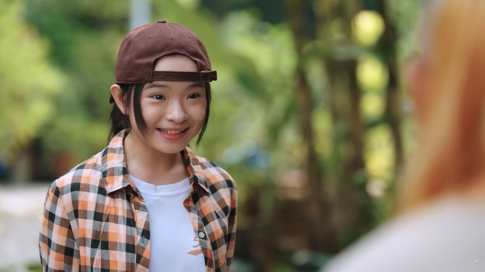

Nói chuyện tự nhiên
Nói như đang trò chuyện với bạn, không đọc thoại. Nhìn và nghe bạn diễn rồi phản ứng.
Tự nhiên như một nhóm bạn cùng lớp.
Nói như đang trò chuyện với bạn, không đọc thoại. Nhìn và nghe bạn diễn rồi phản ứng.
Khi bị trêu hoặc thua game, thể hiện bằng ánh mắt, nét mặt và động tác nhỏ. Tránh la hét hay làm mặt quá lố.
Khi được khen: cười, tránh nhìn thẳng hoặc hơi lúng túng. Các bạn nhìn nhau, cười và trêu nhẹ.
VIDEO THAM KHẢO DIỄN XUẤT · FAPTV
Tham khảo thêm: Cô gái năm ấy chúng ta cùng theo đuổi · Trailer 2011 ↗
Ảnh chụp từ Người Trong Sân Trường · Tập 6, giữ màu gốc của phim.
